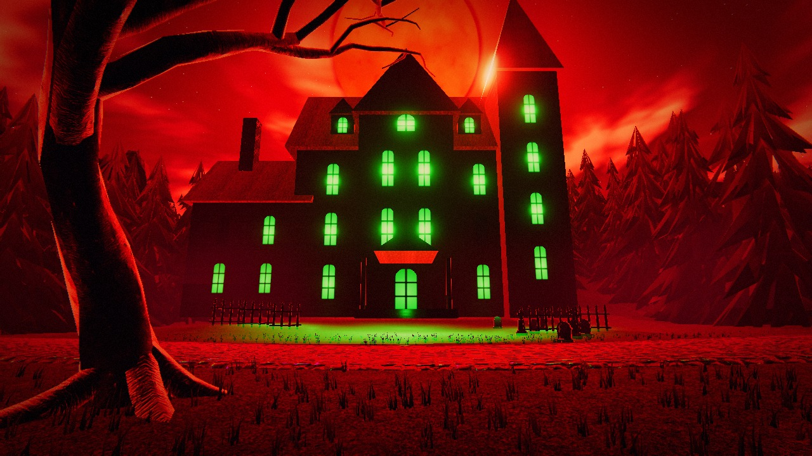
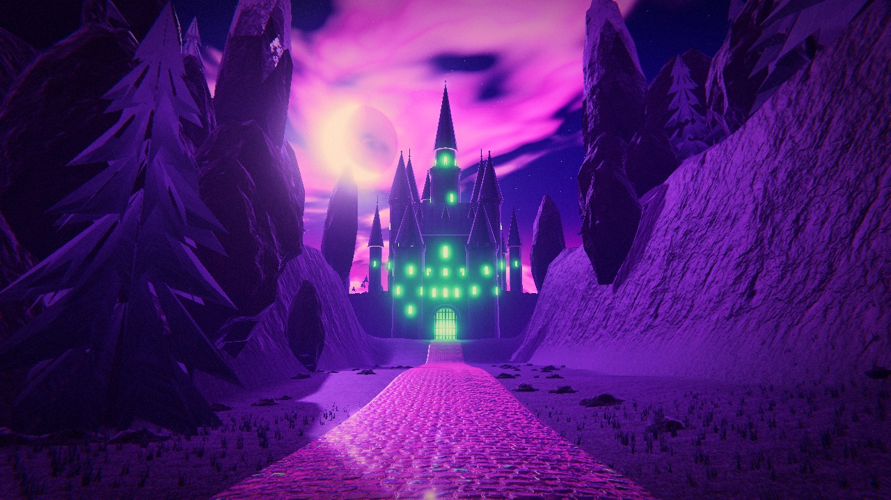
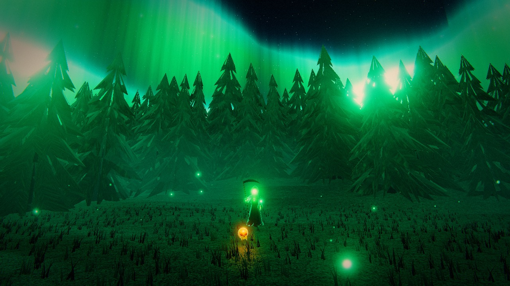
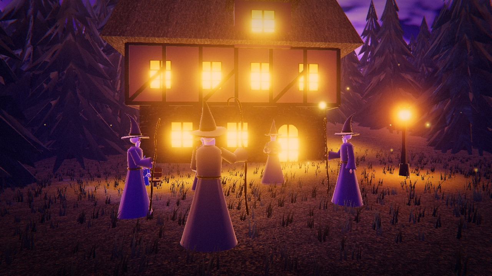
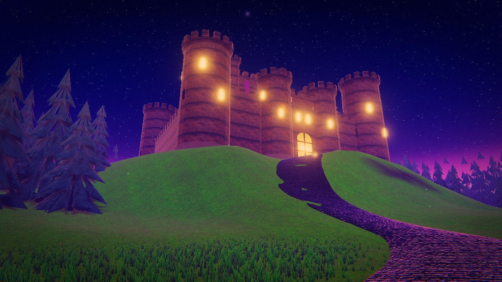
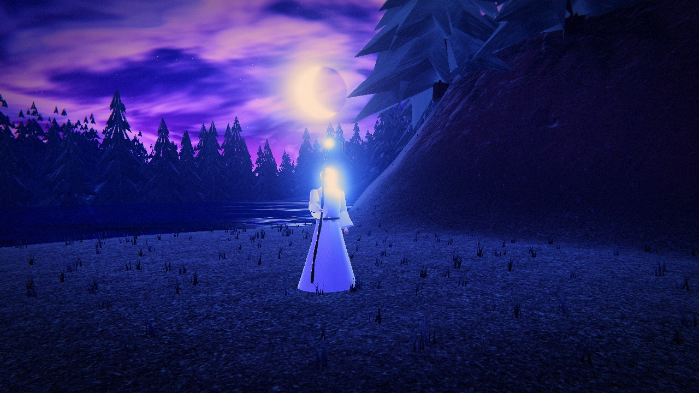
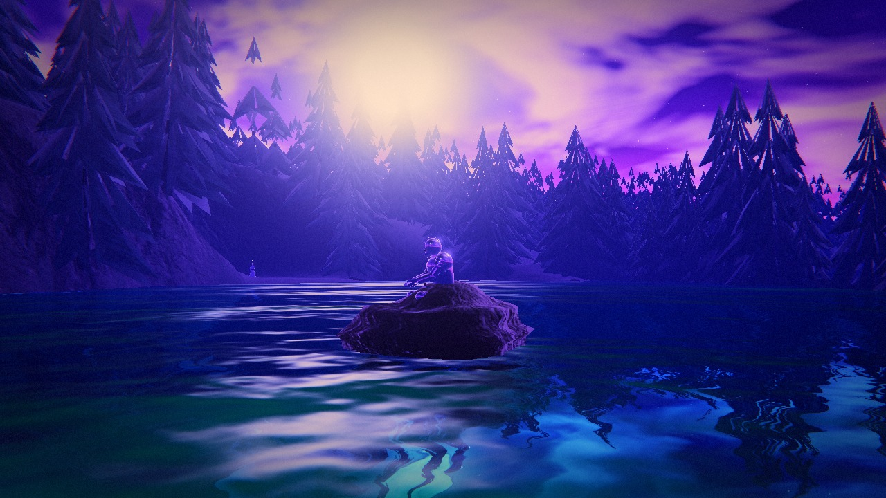
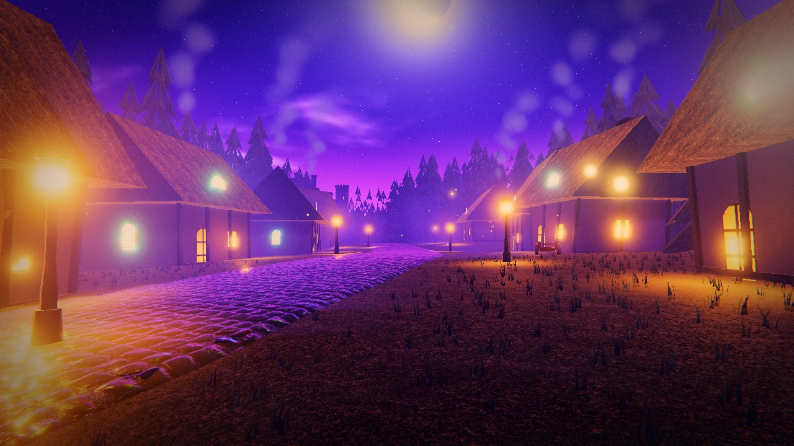
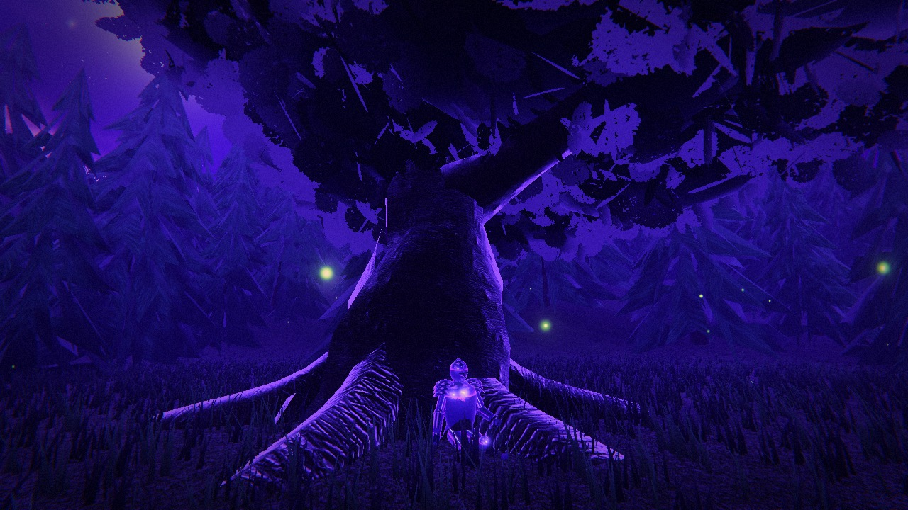

Vaelmoor · the Gloaming
Left: the reference (the written brief where no image exists in refs/). Right: the matching photo-mode camera, captured headless by tools/shoot.mjs. Regenerate with npm run shots && node tools/compare.mjs.
1 Crimsonreach Manor ref_01
Crimson sky with a huge red moon, a twisted black dead tree framing the left, a dark haunted manor with tall green glowing windows, green light spilling onto the ground.

2 The Road to Vaelmoor Keep ref_02
A cobblestone road leading straight to a dark spired castle. The stones have a glossy iridescent sheen (orange, pink, teal reflections). Green glowing castle windows, violet and magenta clouds, rocky cliffs on both sides.

3 The Hollow Pines ref_03
Teal and green aurora sky above dark pines, a hooded skeleton in a black robe with faintly glowing green bones, a golden skull on the ground in front.

4 The Conclave House ref_04 / ref_05
A gathering of robed wizards (tall, purple and grey robes, pointed hats, long white beards) beside a timber house with warm yellow windows, smoke drifting, a small blue-robed gnome wizard sitting on a bench.

5 Castle Ambermere ref_06
A sandstone castle with round crenellated towers, starry night sky fading to pink at the horizon, a winding purple cobble path through a bright green grassy hill.

6 The Pale Shore ref_07
A white-robed wizard with a crooked staff standing by dark water, crescent moon, deep blue and purple clouds.

7 Glasswater ref_08
A knight in shiny plate armor sitting on a rock in a glassy teal lake, tall pines on both sides, violet sky.

8 Lanternholt ref_09
A fairy-tale village at night: crooked storybook cottages with stained-glass and warm glowing windows, lanterns, a starry purple sky, dense dark trees around it.

9 The Sentinel Oak ref_10
A knight resting under a huge tree, crescent moon in a violet sky.
